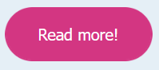

First things first - Das Wichtigste zuerst
Please choose a language - Bitte wähle eine Sprache


Willkommen bei: PayPal unter dem Mikroskop
Wenn du nicht dafür bezahlst, bist du das Produkt.
Diese Website wird keine persönlichen Daten von Dir sammeln. Aber nicht jeder hat Deine besten Interessen im Sinn. Lass uns herausfinden, wie PayPal das macht und welche Auswirkungen dies auf den Einzelnen und die Gesellschaft hat.
Was wirst du hier tun?
- auf dieser Website kannst du eine Zusammenfassung unserer Erkenntnisse über PayPal lesen
- zwischendurch über einige Fragen nachdenken
- dich fragen, wie das überhaupt möglich ist und was das mit dir zu tun hat.
- Zugang zu unserem umfangreichen Forschungsdossier mit zusätzlichen Informationen und Quellen erhalten
- um einen kurzen sachlichen Überblick über unsere Ergebnisse zu erhalten

Wie man navigiert:

Wie man navigiert:
Du kannst die Website mit Hilfe deines Mausrades oder Touchpads durchscrollen.
Alternativ kannst du auch die Pfeiltasten auf der Tastatur verwenden. (Verwende die Auf-/Abwärtstaste, um innerhalb eines Abschnitts zu navigieren. Wenn du das Ende eines Abschnitts erreicht hast, kannsr dz mit den Pfeiltasten links/rechts zum nächsten vorherigen Abscnitt wechseln.)
Wie man navigiert:
Oben auf der Seite siehst du alle Abschnitte. Der Bereich, in dem du dich gerade befindest, ist dunkelblau unterlegt.
Wie man navigiert:
Oben auf der Seite siehst du alle Abschnitte. Der Bereich, in dem du dich gerade befindest, ist dunkelblau unterlegt.
Im gesamten Text sind Schlüsselwörter in hellblau hervorgehoben. Klicke sie an, um eine Definition des jeweiligen Wortes zu erhalten.
Wie man navigiert:
Oben auf der Seite siehst du alle Abschnitte. Der Bereich, in dem du dich gerade befindest, ist dunkelblau unterlegt.
Im gesamten Text sind Schlüsselwörter in hellblau hervorgehoben. Klicke sie an, um eine Definition des jeweiligen Wortes zu erhalten.
Auf der Website kansst du einige Fragen beantworten. Klicke auf eine Antwort, um herauszufinden, ob du richtig liegst.
Wie man navigiert:
Oben auf der Seite siehst du alle Abschnitte. Der Bereich, in dem du dich gerade befindest, ist dunkelblau unterlegt.
Im gesamten Text sind Schlüsselwörter in hellblau hervorgehoben. Klicke sie an, um eine Definition des jeweiligen Wortes zu erhalten.
Auf der Website kansst du einige Fragen beantworten. Klicke auf eine Antwort, um herauszufinden, ob du richtig liegst.
Rosa Schaltflächen leiten dich zu unserem Forschungsdossier weiter, wo du weitere Informationen erhältst.

Wer oder was ist PayPal?
Du hast doch schon von PayPal gehört, oder? PayPal ist einer der größten Zahlungsdienstleister der Welt. Mit diesem Service kannst du Geld an deine Freunde überweisen oder für Dinge bezahlen, die du online gekauft hast. Ihr Ziel ist es, dir ein Gefühl von Sicherheit zu geben, wenn du einem Fremden in einem beliebigen Online-Shop Geld überweist. Online-Shops, die die Möglichkeit bieten, mit PayPal zu bezahlen, erscheinen vertrauenswürdiger - schließlich handelt es sich um ein großes Unternehmen mit Millionen von Nutzern, das sichere Transaktionen gewährleistet. Und wenn viele Menschen es nutzen, dann muss es doch gut sein, oder?

Die Nutzung von PayPal ist für uns als Nutzer*innen kostenlos, wie kommt es also, dass das Unternehmen damit Milliarden verdient? Nun, als allgemeine Regel kannst du dir merken: Wenn du für eine Dienstleistung nicht mit Geld bezahlst, dann zahlst du höchstwahrscheinlich mit deinen persönlichen Daten. Und das ist auch bei PayPal der Fall. Ja, PayPal braucht einige Informationen von dir, um eine Zahlung zu bearbeiten. Was jedoch verdächtig erscheint, ist, dass PayPal viel mehr Informationen sammelt, als für die Abwicklung einer einfachen Online-Zahlung erforderlich ist. So viele Daten auf Servern zu speichern, kostet Geld. Da PayPal über 400 Millionen Nutzer*innen hat, wäre das extrem teuer. Es muss also einen Haken geben!
A die Bestellsumme, den empfangenden Händler und die authentifizierte
Zahlungsmethode
B die Gesamtsumme der Bestellung, die bestellten Artikel und die Adresse des Kunden
C die bestellten Artikel, die Adresse des Kunden und die authentifizierte
Zahlungsmethode
Wenn die Bezahlung online erfolgt, fragt PayPal die externe Website, also den Online-Shop, zusätzlich zu den erforderlichen Informationen nach folgenden Angaben:
- eine Beschreibung der bestellten Artikel
- die Quittung und Informationen über den Käufer, inkl. Adresse (warum?)
- Telefonnummer und E-Mail-Adresse (ok, klar)
- Browser-, Such- und Einkaufshistorie (Moment mal, warum?)
- Kontaktliste (wozu brauchen sie die Kontaktdaten meines lang verschollenen Freundes aus der dritten Klasse?)
- Finanzinformationen (einschließlich Informationen über Zahlungen und Kreditinformationen) (hmm, das klingt nach privaten Informationen, die niemanden etwas angehen)
- Identifizierung (einschließlich Benutzer-ID und IP-Adresse) (Hallo, ich bin's...)
- Lokalisierung (genauer und geschätzter Standort) (ja, ich bin zu Weihnachten bei meinen Großeltern, wen interessiert das?)
Die von dir erstellten Daten sind wie ein Internet-Fußabdruck, der Informationen über deine Person enthält, um ein Profil zu erstellen. Dieses Profil wird wiederum verwendet, um dein zukünftiges Verhalten im Internet vorherzusagen. Und warum? Weil jemand davon profitiert. Wie profitieren sie? Sie verkaufen ihre Vorhersagen über dein mögliches Verhalten an andere Unternehmen, die dann dafür sorgen, dass du auf Instagram eine Werbung für die neuen Kopfhörer siehst, an denen du interessiert bist.
Wie kommt PayPal an all diese personenbezogenen Daten?

Manchmal ist eine Wahl, die du triffst, nicht ganz deine eigene, und du triffst nicht
immer selbstbestimmte Entscheidungen. Unternehmen wie PayPal nutzen Tricks, um dich zu
beeinflussen:
Stell dir vor, in der Cafeteria würden Äpfel und Wasser in der Auslage stehen, während
Chips und Cola im unteren Bereich der Theke platziert wären. Jeder könnte immer noch selbst
entscheiden, was er oder sie essen möchte, aber man würde sich während der Wartezeit gesundes
Essen ansehen und wäre sich der anderen Optionen vielleicht gar nicht bewusst. Es wäre
einfacher, etwas zu bekommen, das leicht zu erreichen und sichtbar ist - und so werden
Leute dazu gebracht, gesundes Essen statt ungesundem zu kaufen. (Obwohl in der Regel Chips
und Cola in der Auslage stehen und nicht das Gesunde, pass auf!)
Obwohl du letztendlich frei entscheiden kannst, ist das, dem du zugestimmt hast, höchstwahrscheinlich das Ergebnis der Bemühungen und psychologischen Tricks der Unternehmen. Das Verhalten der Menschen ist damit vorhersehbar!
PayPal verwendet eine Reihe von subtilen Strategien und Tricks, wie nudging und dark patterns die auch auf der Grundlage der gewählten Sprache und des Landes ausgewählt werden, um sie noch nahtloser zu gestalten.
Hier werden unterschiedliche Schaltflächenfarben verwendet, um Benutzer*innen dazu zu bringen, sich bei PayPal anzumelden, während die Schaltfläche "Beenden" ausgeblendet wird.
PayPal verwendet eine Reihe von subtilen Strategien und Tricks, wie nudging und dark patterns die auch auf der Grundlage der gewählten Sprache und des Landes ausgewählt werden, um sie noch nahtloser zu gestalten.
Hier wird unser "tiefes Bedürfnis nach Zugehörigkeit" geweckt.
Bei neuen Nutzer*innen wird Vertrauen geschaffen in ein Unternehmen, da es viele aktive
Nutzer*innen hat und gibt ihnen das Gefühl, Teil einer Gruppe zu sein, wenn sie sich anmelden. ABER
es wird nicht die tatsächliche Anzahl der Nutzer gezählt.
Der Zähler beginnt immer bei 346.000.000 Nutzer*innen wenn die Website besucht wird (ha, uns kann PayPal nichts vormachen).
Aber kann ich mich nicht einfach weigern, PayPal all diese persönlichen Daten zu geben?
Bei jeder Online-Zahlung, beim Herunterladen einer App oder bei der Inanspruchnahme eines Dienstes wirst du aufgefordert, einem Dokument mit dem Titel "Allgemeine Geschäftsbedingungen" oder "Nutzungsvereinbarung" zuzustimmen. Bei Online-Diensten und Websites musst du oft ein kleines Kästchen ankreuzen, dass du dem Dokument zustimmst, bevor du fortfahren und den Dienst nutzen kannst. Aber mal ehrlich, hast du dieses Dokument jemals gelesen? Du brauchst dich nicht zu schämen, wenn du es nicht getan hast. Die meisten Menschen lesen es nicht, und dafür gibt es gute Gründe.
Zunächst einmal sind die Allgemeinen Geschäftsbedingungen wahrscheinlich länger als deine Geschichts-Hausaufgaben für einen ganzen Monat. Die Allgemeinen Geschäftsbedingungen von PayPal enthalten weit mehr Wörter als die Allgemeinen Geschäftsbedingungen anderer Unternehmen, die ähnliche Dienstleistungen anbieten. Um die Allgemeinen Geschäftsbedingungen von PayPal zu lesen, benötigen durchschnittliche Leser*innen 1,5 Stunden. Das ist viel Zeit für die Lektüre eines langweiligen Dokuments, das mit vielen langen Sätzen geschrieben ist. Vor allem, wenn es bei Diensten wie PayPal darum geht, schnelle Transaktionen durchzuführen. Und am Ende hast du nicht einmal die Möglichkeit, Änderungen vorzunehmen, wenn du mit Teilen des Dokuments nicht einverstanden bist. Es gehört zum Geschäftsmodell von PayPal, die Allgemeinen Geschäftsbedingungen lang, langweilig und schwer verständlich zu gestalten. Auf diese Weise werden neue Nutzer*innen das Dokument höchstwahrscheinlich nicht lesen und die Allgemeinen Geschäftsbedingungen blind akzeptieren, so dass sie nicht wissen, was mit ihren persönlichen Daten geschieht.
Gibt es nicht ein Gesetz, das uns und unsere persönlichen Daten, die von PayPal verwendet werden, schützt?

Zum Glück gibt es die Allgemeine Datenschutzverordnung (DSGVO). Dabei handelt es sich um ein langes Dokument mit Gesetzen und Regeln zum Datenschutz, die alle Unternehmen, die in der Europäischen Union (EU) personenbezogene Daten sammeln und verarbeiten, befolgen müssen. Dieses Dokument legt die Messlatte sehr hoch und viele Unternehmen, die Daten sammeln, mussten Änderungen vornehmen, um den Datenschutz für ihre Nutzer*innen zu verbessern, als die Verordnung 2018 eingeführt wurde.
Hier ist ein Artikel aus der Datenschutz-Grundverordnung, der Regeln für die Verarbeitung personenbezogener Daten enthält:
DSGVO Artikel 5. c):
(1) „Personenbezogenen Daten müssen
c) dem Zweck angemessen und erheblich sowie auf das für die Zwecke der Verarbeitung notwendige Maß beschränkt sein („Datenminimierung“).“
Und hier kommt das Problem: Es ist nicht definiert, was "angemessene, erheblich und auf ein notwendiges Maß beschränkte" Daten sind, so dass Unternehmen dies nach Belieben auslegen können - und, Disclaimer, sie tun es auch. Daher kann PayPal beliebige Daten sammeln, solange sie dies mit ihren Geschäftsinteressen rechtfertigen können. Die Geschäftsinteressen von PayPal sind für Nutzer*innen nicht wirklich ersichtlich und werden nur vage beschrieben, so dass PayPal das Sammeln und Verarbeiten von praktisch allen Daten rechtfertigen kann. Und genau das tun sie auch.
A Es gibt niemanden, der tatsächlich kontrolliert, ob Unternehmen diese Regel befolgen,
also kümmert sich niemand wirklich darum. .
B Unternehmen dürfen nur personenbezogenen Daten sammeln, die zum Verfolgen
ihrer Geschäftsziele notwendig sind.
C Die Einhaltung dieser Regel liegt in der Verantwortung der Nutzer*innen, d. h.
sie sollten Online-Unternehmen so wenig Daten wie möglich zur Verfügung stellen.
A vollständig
B sie ist nur theoretisch
C sie ist zu vage und Schlupflöcher sind leicht zu finden
Wir haben gesehen, dass PayPal eine Menge persönlicher Daten
über jeden von uns sammelt, die für Online-Zahlungen eigentlich nicht benötigt werden.
"Aber was hat das mit mir zu tun?"

Stell dir vor, du bist mit einer Gruppe von Freunden unterwegs, um ein Eis zu essen. Eine Person in deiner Gruppe hat ihr Portemonnaie vergessen und fragt, ob ihr jemand etwas Geld leihen könnte. Du siehst sie an, als sie die Frage stellt, und bemerkst den leuchtend gelben Pullover, den sie trägt. Du erinnerst dich, dass du vor einiger Zeit einem anderen Freund Geld geliehen hast, das du nie zurückbekommen hast. "Was für ein Zufall", denkst du, "mein Freund hat genau denselben Pullover." Plötzlich willst du der Person mit dem gelben Pullover kein Geld mehr leihen...

Lasst uns dieses Beispiel auf eine andere Ebene bringen: Stell dir vor, wie sich eine solche Entscheidung auswirken würde, wenn sich jemand um eine Stelle bewirbt. Nur weil der Bewerber die gleiche Frisur oder den gleichen Mantel trug wie eine Kandidatin, die im Vorstellungsgespräch nicht so gut war, sagt das noch nichts darüber aus, ob sich diese Person genauso verhalten wird wie eine andere Person mit dem gleichen Aussehen. Aber wenn der Bewerber die Stelle nicht bekommt, weil die Vorgesetzte diese Person nun in einem schlechteren Licht sieht, wird der Bewerber ungerecht behandelt. Leider passiert so etwas immer wieder, mit möglicherweise schwerwiegenden Folgen für einzelne Personen.
Glücklicherweise ist es nicht erlaubt, Entscheidungen aufgrund der Herkunft, des Geschlechts, der sexuellen Orientierung oder der Religion eines Menschen zu treffen. Das ist eine wirklich gute Sache, aber gilt das auch für Algorithmen, die Entscheidungen für Menschen treffen? Natürlich, aber Algorithmen sind besser als Menschen in der Lage, Muster und Verbindungen zwischen Merkmalen von Personen zu finden. Ein Algorithmus hat vielleicht noch nie Informationen über geschützte Merkmale wie Herkunft, Geschlecht, sexuelle Orientierung oder Religion erhalten, aber Algorithmen können hervorragend Merkmale finden, die mit geschützten Klassen korrelieren. So könnte beispielsweise die Postleitzahl mit der Herkunft oder das Einkaufsverhalten mit dem Geschlecht korrelieren. Dies wird als Proxy Diskriminierung bezeichnet.

Was passiert, wenn Algorithmen anstelle von Menschen Entscheidungen treffen?

Jede Variable, die mit einer geschützten Variable korreliert, kann zur Erstellung von Vorhersagen verwendet werden. Selbst wenn der Algorithmus keine Informationen über Herkunft, Geschlecht oder Religion hat, verwendet er Näherungswerte, die etwas über eine geschützte Gruppe von Menschen aussagen. Dies führt dazu, dass Menschen gleich behandelt werden wie Menschen, die sich in der Vergangenheit ähnlich verhalten haben. Menschen werden aufgrund ihres Verhaltens in Schubladen gesteckt, und diese Schubladen werden verwendet, um Entscheidungen zu treffen.

Du fragst dich vielleicht: "Wo liegt das Problem?". Nun, je häufiger wir einen Dienst oder eine Anwendung nutzen, desto mehr Daten werden generiert, die verwendet werden können, um versteckte Muster in den Daten zu finden, die mit einer geschützten Klasse korrelieren. Das macht es dem Algorithmus leichter, eine geschützte Klasse mit anderen Merkmalen zu korrelieren (und das wollen wir nicht).
Sind wir jetzt endlich an dem Punkt angelangt, an dem ich erfahre, was das mit mir zu tun hat?

Ja, sind wir. Wahrscheinlich kennst du auch jemanden in deinem Freundeskreis oder in deiner Familie, die Instagram, TikTok oder PayPal nicht nutzt oder nur sehr wenig teilt, weil diese Person nicht möchte, dass ihre Daten gesammelt werden. Das ist eine gute Entscheidung, aber ist es wirklich so einfach, sich zu schützen? Je mehr Menschen Anwendungen nutzen, die große Mengen an Daten sammeln, desto mehr persönliche Informationen über verschiedene Personen werden gesammelt. Diese großen Datenmengen können dazu beitragen fehlende Information von Personen zu ergänzen, die sich entschieden haben, ihre persönlichen Daten nicht zu teilen. Das nennt sich Prediktive Analytik.
Der Algorithmus hat keine Chance zu überprüfen, ob die persönlichen Informationen über dich tatsächlich korrekt sind, er nimmt dies einfach an, weil es am besten zu passen scheint. Du wirst in eine Box mit Menschen gesteckt, die dir ähnlich scheinen. Die Entscheidung deiner Freunde und aller anderen Menschen auf der Welt, persönliche Daten weiterzugeben, wirkt sich auf alle Menschen aus, die keine persönlichen Daten weitergeben. Wenn wir persönliche Daten online weitergeben, treffen wir nicht nur eine Entscheidung für uns selbst, sondern auch für all die Menschen, die ihre persönlichen Daten eigentlich nicht weitergeben wollen. Wenn genügend Personen genügend Daten zur Verfügung stellen, können Vorhersagen über Personen gemacht werden, die ihre eigenen Daten nicht weitergegeben haben. Dies wird als Datenaggregation bezeichnet.

A Daten von Personen, die dir ähnlich sind, werden verwendet, um dein Verhalten
vorherzusagen.
B Indem du deine persönlichen Daten nicht im Internet weitergibst, schützt du nicht
nur dich selbst, sondern auch andere Menschen.
C Die Entscheidung, ob du deine persönlichen Daten online weitergeben willst,
ist eine Entscheidung, die du nur für dich selbst triffst, sie hat keine Auswirkungen
auf andere Menschen.
Wrap up:
Das Ziel unserer Arbeit ist es, euch zu helfen, fundierte Entscheidungen zu treffen. PayPal ist nur ein einziges Beispiel dafür, wie die digitale Welt funktioniert. Ähnliche Probleme gibt es auch bei zahlreichen anderen Plattformen oder Unternehmen, insbesondere durch die schnelle Digitalisierung von beinahe allem.
Wrap up:
Die Welt bewegt sich schnell auf einen datengesteuerten Status quo zu. Wir brauchen daher tiefere Einblicke in die Bedeutungen dessen und wie wir uns vor Datenmissbrauch schützen können. Wir müssen in der Lage sein, uns im Einklang mit diesem neuen digitalen Zeitalter zu bewegen, anstatt ständig Angst vor Nebenwirkungen zu haben. Das einzige Mittel dagegen sind Wissen und Information. Und das ist es, was wir mit unserer Website hoffentlich erreicht haben.
Korrelation

Eine Korrelation beschreibt den Zusammenhang zwischen zwei Dingen.
An heißen Sommertagen kaufen viele Menschen Eis. Weil die Sonne so intensiv ist,
bekommen viele Menschen auch einen Sonnenbrand. Es gibt eine Korrelation zwischen der
Anzahl der Menschen mit Sonnenbrand und der Menge an Eis, die gegessen wird. Wenn mehr
Menschen Eis essen, bekommen auch mehr Menschen einen Sonnenbrand. Die Korrelation zwischen
zwei Dingen sagt jedoch nichts über die Ursache aus. Die Menge an Eis, die gegessen wird,
führt nicht dazu, dass die Menschen einen Sonnenbrand bekommen, oder umgekehrt. In diesem
Fall ist die Ursache für die Anzahl der Menschen mit Sonnenbrand und die Menge an verzehrtem
Eis eine dritte Variable, nämlich das heiße Sommerwetter.
Algorithmen und Künstliche Intelligenz (KI)
Diese Worte klingen kompliziert und groß, aber wir wollen sie jetzt kurz aufschlüsseln.Algorithmen
Ein Algorithmus ist ein bestimmter Satz von Regeln, die Schritt für Schritt angewendet werden, um eine Lösung für ein Problem zu finden. Ein einfaches Beispiel ist ein Rezept zum Backen eines Kuchens. Du hast viele Zutaten und ein Rezept mit einer Schritt-für-Schritt-Anleitung, die beschreibt, was du tun musst, um am Ende einen leckeren Kuchen zu bekommen. (Achte nur darauf, dass du das nächste Mal, wenn du ein Rezept mit jemandem teilst, nicht sagst: "Ich habe einen tollen Käsekuchen-Algorithmus für dich", das wird deine Bäckerkolleg*innen wahrscheinlich verwirren!)
Künstliche Intelligenz (KI)
KI-Systeme verwenden solche Algorithmen, um sehr komplexe Probleme zu lösen, z. B. die Erkennung von Objekten auf Bildern. Da solche Algorithmen für den Menschen zu schwer zu verstehen sind, finden KI-Systeme die Lösungen und Algorithmen selbst. Stell dir vor, du hast ein Bild von einem Hund und möchtest herausfinden, um welche Rasse es sich handelt. Ein kluger Mensch hat dafür eine KI entwickelt, indem er Hunderttausende von Hundebildern mit dem Namen der Rasse aufgenommen und der KI gezeigt hat. Die KI lernt, welche Merkmale für einen Labrador, einen Mops oder einen Dalmatiner typisch sind. Du kannst dann ein beliebiges Hundebild aufnehmen, und die KI wird dir sagen, um welche Rasse es sich handelt. Was KI-Systeme "intelligent" macht, ist, dass sie in der Lage sind, die Algorithmen selbst zu erlernen, und dass sie dann die Rasse von Hunden bestimmen können, die das KI-System noch nie gesehen hat.
Nudging
Glaubst du, dass deine Entscheidungen im Internet wirklich von dir getroffen werden?
Und dass du die Entscheidung getroffen hast deine Daten zu teilen?
Nudging-Strategien nutzen gedankliche Abkürzungen, die bei Entscheidungen irrationales Verhalten erklärbarer und sogar vorhersehbarer machen.
Obwohl du letztlich frei entscheiden kannst, die Option der du zugestimmt hast ist
höchstwahrscheinlich das Ergebnis der Bemühungen und psychologischer Tricks der Unternehmen.
Das Verhalten der Menschen ist damit vorhersehbar.
Dies kann ausgenutzt werden, um gewünschte Ergebnisse zu erzielen oder Nutzer zu manipulieren.
Die gezielte Platzierung bestimmter Flächen zum Klicken auf Internetseiten kann dich in
eine bestimmte Richtung drängen/nudgen.
Dadurch wird der Eindruck erweckt, dass die Entscheidung von dir getroffen wurde, während das
Unternehmen dennoch das gewünschte Ergebnis erzielen kann.
Dark Patterns

Manchmal kann ein Nudge zu einem “Dark Pattern” werden, wenn er darauf abzielt, dass du dich für etwas entscheidest das schlechte Folgen für dich hat.
"Teilen" oder "nicht teilen"? Das ist die Frage!
Nun, in diesem Fall ist es kaum eine Frage, denn du wirst zum "Teilen" gedrängt, ohne überhaupt die Alternative in Betracht zu ziehen. Das ist es, was “Dark Patterns” und Nudging bewirken.
Diese Website ist ein Produkt des Data Ethics Outreach Lab (DEOL) der University Osnabrück.
Kontakt:
- Carmen Amme (camme@uos.de)
- Regilla Bastian (rbastian@uos.de)
- Anneke Büürma (abueuerma@uos.de)
- Alicja Suchonska (asuchonska@uos.de)
Adresse:
Institut für Kognitionswissenschaften
Wachsbleiche 27
49090 Osnabrück
Germany
Das Ende
Ab hier musst du nicht weiter scrollen.
Die folgenden Seiten sind nur für die Interaktion mit den Fragen und dem Dossier gedacht. Sie machen in dieser Reihenfolge keinen tieferen Sinn.
Ups... deine Antwort war falsch!
Bitte versuche es erneut!

Ja, du hast Recht!
...die Bestellsumme, der empfangende Händler und die authentifizierte Zahlungsmethode sind für die Abwicklung einer Online-Zahlung erforderlich.
Nicht mehr und nicht weniger!
Ups... deine Antwort war falsch!
Bitte versuche es erneut!
Ja, du hast Recht!
b) ist korrekt!
Es stimmt, dass Unternehmen nur so wenig Informationen wie möglich sammeln dürfen, um ihre Unternehmensziele zu erreichen. Das Problem dabei ist, dass die Geschäftsinteressen von PayPal so vage und zweideutig sind, dass sie das Sammeln von persönlichen Informationen rechtfertigen können.
Ups... deine Antwort war falsch!
Bitte versuche es erneut!
Ja, du hast Recht!
Antwort c) ist korrekt!
Sie ist zu vage, und Schlupflöcher lassen sich leicht finden.
Ups... deine Antwort war falsch!
Bitte versuche es erneut!
Ja, du hast Recht!
c) ist falsch!
Wenn persönliche Informationen über viele Menschen zusammengefasst werden, wird es einfacher Vorhersagen über Personen zu treffen, die einer bestimmten Gruppe von Personen ähnlich sind, ohne persönliche Informationen über diese eine Person zu haben.
Bitte scrolle zu Teil 2.1 um mehr über die Allgemeinen Geschäftsbedingungen von PayPal zu erfahren
(Du kannst diese Datei auch donwloden!)
Bitte scrolle zu Teil 1.3 um mehr über PayPal und die Anwendungsprogrammierschnittstelle zu erfahren
(Du kannst diese Datei auch donwloden!)
Bitte scrolle zu Teil 2.2 and 3.2 um mehr über das äußere Erscheinungsbild von PayPal und die Datenschutzerklärung von PayPal zu erfahren
(Du kannst diese Datei auch donwloden!)
Bitte scrolle zu Teil 1.2 and 3.1 um mehr über die Geschäftsstrategien von PayPal und den Hintergrund von Big Data und Datenschutz zu erfahren
(Du kannst diese Datei auch donwloden!)
Bitte scrolle zu Teil 3.4 um mehr über PayPal und die Allgemeine Datenschutz Datenschutzverordnung (DSGVO) zu erfahren
(Du kannst diese Datei auch donwloden!)
Bitte scrolle zu Teil 3.6 um mehr über die Verbindung zu theoretischen Konzepten zu erfahren
(Du kannst diese Datei auch donwloden!)
Bitte scrolle zu Teil 4 mehr zum Thema "Kollektive Verantwortung - Das große Ganze" zu lesen
(Du kannst diese Datei auch donwloden!)